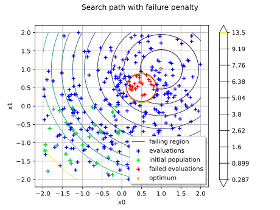
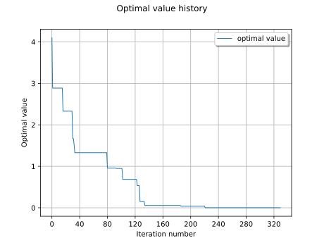

Note
Go to the end to download the full example code.
Optimize a failure-prone model with a failure penalty¶
In this example we optimize a model which may fail to evaluate,
e.g. a simulation which raises an exception outside its validity domain.
This failure penalty handles simulations that raise exceptions, such as RuntimeError.
It cannot recover from process-level crashes (segmentation fault, abort, …).
Without precaution the optimizer stops on the first failure.
The ExceptionPenalizedEvaluation and
ExceptionPenalizedProblem classes replace
failures by a large failure-penalty value so the optimizer can proceed.
import math
import openturns as ot
import openturns.experimental as otexp
import openturns.viewer as otv
Define a failure-prone model¶
We minimize a quadratic function with optimum at ![(1, 1)]() ,
but the model raises an exception inside the disk
,
but the model raises an exception inside the disk
![(x_1 - 0.5)^2 + (x_2 - 0.5)^2 < 0.375^2]() ,
e.g. as if a solver failed to converge there.
This failing region sits in the middle of the search space,
so any space-filling search cannot avoid stepping into it.
,
e.g. as if a solver failed to converge there.
This failing region sits in the middle of the search space,
so any space-filling search cannot avoid stepping into it.
def failing_py(x):
if (x[0] - 0.5) ** 2 + (x[1] - 0.5) ** 2 < 0.375**2:
raise RuntimeError("simulation fails inside the failing region")
return [(x[0] - 1.0) ** 2 + (x[1] - 1.0) ** 2]
model = ot.PythonFunction(2, 1, failing_py)
The model works on feasible points:
print(model([1.0, 1.0]))
[0]
but it throws inside the failing region:
try:
model([0.5, 0.5])
except RuntimeError as ex:
print(f"evaluation failed: {ex}")
evaluation failed: simulation fails inside the failing region
Wrap the problem with a failure penalty¶
We define the optimization problem on ![[-2, 2]^2]() :
:
problem = ot.OptimizationProblem(model)
problem.setMinimization(True)
problem.setBounds(ot.Interval([-2.0] * 2, [2.0] * 2))
Starting from a failing point, a classical solver stops at the first failure:
algo = ot.Cobyla(problem)
algo.setStartingPoint([0.5, 0.5])
try:
algo.run()
except TypeError as ex:
print(f"optimization failed: {ex}")
optimization failed: InvalidArgumentException : No feasible point found during optimization
The ExceptionPenalizedProblem class wraps the problem
and replaces its objective by a failure-penalty function:
a failed evaluation returns a large positive value for minimization
(a large negative value for maximization).
Bounds, constraints and minimization flags are preserved.
Note that the failure-penalty functions are flat where the model fails,
so gradient-based solvers may stall there: use derivative-free
solvers (e.g. Cobyla, Pagmo).
The failure-penalty objective agrees with the model on feasible points:
print(penalizedProblem.getObjective()([1.0, 1.0]))
[0]
and returns the failure-penalty value on failures:
print(penalizedProblem.getObjective()([0.5, 0.5]))
[1e+06]
Batch evaluations mix both cases, which is useful for
population-based solvers such as Pagmo:
print(penalizedProblem.getObjective()(ot.Sample([[0.5, 0.5], [1.0, 1.0]])))
[ y0 ]
0 : [ 1e+06 ]
1 : [ 0 ]
The low-level ExceptionPenalizedEvaluation class
offers the same mechanism on a single evaluation:
penalizedEvaluation = otexp.ExceptionPenalizedEvaluation(model.getEvaluation(), 1.0e6)
print(ot.Function(penalizedEvaluation)([0.5, 0.5]))
[1e+06]
Solve the problem with failure penalty¶
We use a global evolutionary solver: its initial population lies in
![[-2, 0]^2]() , far from the optimum, so the search must travel
across the failing disk to reach .
Without a failure penalty the search stops at the first failure:
, far from the optimum, so the search must travel
across the failing disk to reach .
Without a failure penalty the search stops at the first failure:
ot.RandomGenerator.SetSeed(0)
pop0 = ot.JointDistribution([ot.Uniform(-2.0, 0.0)] * 2).getSample(30)
algo = ot.Pagmo(problem, "de", pop0)
algo.setMaximumIterationNumber(10)
try:
algo.run()
except RuntimeError as ex:
print(f"optimization failed: {ex}")
crashedResult = algo.getResult()
failedInputSample = crashedResult.getInputSample()
print(f"evaluations before failure: {failedInputSample.getSize()}")
print("best f before failure:", model(failedInputSample).getMin())
optimization failed: simulation fails inside the failing region
evaluations before failure: 142
best f before failure: [0.0563574]
With a failure penalty the failed evaluations are replaced by the failure-penalty value and the search proceeds across the failing region:
algo = ot.Pagmo(penalizedProblem, "de", pop0)
algo.setMaximumIterationNumber(10)
algo.run()
result = algo.getResult()
print("x*=", result.getOptimalPoint())
print("f(x*)=", result.getOptimalValue())
x*= [0.991077,1.01556]
f(x*)= [0.000321737]
The search stepped into the failing region on its way to the optimum: these evaluations were replaced by the failure-penalty value instead of stopping the optimization:
inputSample = result.getInputSample()
outputSample = penalizedProblem.getObjective()(inputSample)
nFailed = sum(1 for i in range(outputSample.getSize()) if outputSample[i, 0] >= 1.0e6)
print(f"failed evaluations: {nFailed} / {outputSample.getSize()}")
failed evaluations: 22 / 330
Despite these failures the optimizer recovered the
minimum with value ![0]() .
.
Graphical comparison¶
Draw the failure-penalty objective isovalues with each search path. We use the failure-penalty objective (and not the raw model) as it can be evaluated everywhere, including in the failing region.
penalizedFunction = penalizedProblem.getObjective()
# Outline of the failing disk, drawn in red on both graphs:
angles = [2.0 * math.pi * i / 100 for i in range(101)]
disk = ot.Curve(
[[0.5 + 0.375 * math.cos(t), 0.5 + 0.375 * math.sin(t)] for t in angles]
)
disk.setColor("red")
disk.setLegend("failing region")
graph = penalizedFunction.draw([-2.0] * 2, [2.0] * 2, [100] * 2)
graph.setTitle("Search path without failure penalty (failed)")
graph.getDrawable(0).setLevels([0.5, 1.0, 2.0, 4.0, 8.0])
graph.add(disk)
failedCloud = ot.Cloud(failedInputSample)
failedCloud.setColor("orange")
failedCloud.setLegend("evaluations")
graph.add(failedCloud)
popCloud = ot.Cloud(pop0)
popCloud.setColor("green")
popCloud.setLegend("initial population")
graph.add(popCloud)
graph.setLegendPosition("lower right")
view = otv.View(graph)

graph = penalizedFunction.draw([-2.0] * 2, [2.0] * 2, [100] * 2)
graph.setTitle("Search path with failure penalty")
graph.getDrawable(0).setLevels([0.5, 1.0, 2.0, 4.0, 8.0])
graph.add(disk)
okSample = ot.Sample(
[inputSample[i] for i in range(inputSample.getSize()) if outputSample[i, 0] < 1.0e6]
)
failedPenalizedSample = ot.Sample(
[inputSample[i] for i in range(inputSample.getSize()) if outputSample[i, 0] >= 1.0e6]
)
cloud = ot.Cloud(okSample)
cloud.setColor("blue")
cloud.setLegend("evaluations")
graph.add(cloud)
popCloud = ot.Cloud(pop0)
popCloud.setColor("green")
popCloud.setLegend("initial population")
graph.add(popCloud)
failedCloud = ot.Cloud(failedPenalizedSample)
failedCloud.setColor("red")
failedCloud.setLegend("failed evaluations")
graph.add(failedCloud)
optimum = ot.Cloud(ot.Sample([result.getOptimalPoint()]))
optimum.setColor("orange")
optimum.setPointStyle("bullet")
optimum.setLegend("optimum")
graph.add(optimum)
graph.setLegendPosition("lower right")
view = otv.View(graph)

The plateau at ![10^6]() corresponds to the failing disk,
outlined in red. The search without failure penalty stopped at its edge, while
the search with failure penalty crossed it: the red dots inside the disk
are failed evaluations which were replaced by the failure-penalty value
on the way to the minimum (blue dots, orange optimum).
corresponds to the failing disk,
outlined in red. The search without failure penalty stopped at its edge, while
the search with failure penalty crossed it: the red dots inside the disk
are failed evaluations which were replaced by the failure-penalty value
on the way to the minimum (blue dots, orange optimum).

Display all figures